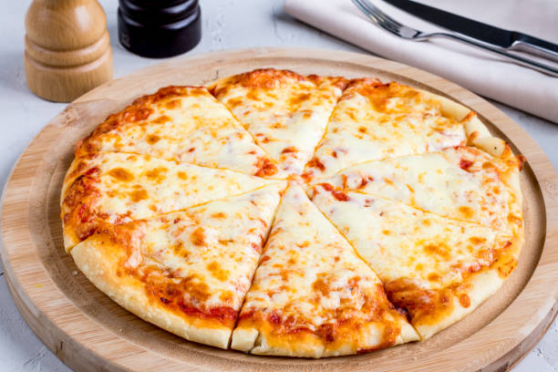

Receta maza para Pizza
Home

Esta receta es de una masa de pizza sencilla y rápida, que no necesita mayor tiempo de leudado.
Ingredientes:
- 450 gr de harina con o sin polvos
- 300 ml de agua
- 15 gr de levadura seca
- cucharada de azúcar
- Dos cucharadas de aceite
- Dos cucharaditas de sal
Intrucciones de preparación:
- Poner el azúcar y la levadura en el agua y esperar 15 minutos para que se active
- Mezclar todos los otros ingredientes en un bol
- Amasar hasta hacer una masa homogenea
- Dejar leudar en un bol con un poco de aceite, durante 1 hora
- Amasar y formar la preparación de la masa
- Poner ingredientes a gusto, mientras el horno se calienta
- Finalmente poner la pizza en el horno a 200° por 20 minutos